Formación académica
Computación
Maestría en Informática | PEDECIBA | 2026 - | Tesis
Tesis en procesamiento del lenguaje natural y sistemas basados en agentes de inteligencia artificial.
Ingeniería en Computación | FING - UDELAR | 2020 - 2025 | Proyecto de grado (2024)
Estadística
Licenciatura en Estadística | FCEA - UDELAR | 2025 -
Pendientes:
- Inferencia II WIP
- Aprendizaje Estadístico Supervisado WIP
- Ecuaciones Diferenciales
- Series Cronológicas
- Análisis Multivariado
Economía
Licenciatura en Economía | FCEA - UDELAR | 2025 -
Cursando ahora
- Aprendizaje Estadístico Supervisado Lic. en Estadística
- Inferencia II Lic. en Estadística
- Microeconomía I Lic. en Economía
- Introducción a la Macroeconomía Lic. en Economía
Experiencia profesional
Analista de TI en el Ministerio de Desarrollo Social
Relevamiento de requerimientos y desarrollo y mantenimiento de sistemas con Java, Python, React, PostgreSQL y SQL Server, en coordinación con proveedores externos. Implementación de soluciones basadas en Machine Learning.
Pasante en la Intendencia de Montevideo
Relevamiento de requerimientos y desarrollo, despliegue y mantenimiento de aplicaciones con JEE, EJB y JBoss sobre Oracle, PostgreSQL y SQL Server, además de tableros en Grafana, en equipos multidisciplinarios con metodologías ágiles.
Investigación y trabajo académico

TA1C 2025 - Detección de clickbait y generación de spoilers en español
Se desarrollaron y evaluaron modelos para detectar clickbait en español y agentes para generar spoilers. Se diseñaron flujos de recuperación de información, estrategias de ajuste fino y métodos de aprendizaje con pocos ejemplos. Se obtuvo el cuarto puesto en la tarea de detección y el primer puesto en la de generación de spoilers.

Selección de kernels para multiplicación dispersa de matrices por vectores
Se desarrollaron y probaron métodos basados en aprendizaje automático para seleccionar kernels óptimos de SpMV en GPU. Se diseñaron características derivadas de imágenes, se aplicó reducción de dimensionalidad y se compararon varios clasificadores para predecir la implementación más rápida.

Inteligencia computacional para la generación de modelos subrogados
Se estudió el modelado subrogado mediante programación genética centrada en regresión simbólica. Se evaluaron DSO, Operon y DSR, y se extendió DSO para optimización multiobjetivo con restricciones y tratamiento de monotonía. Se analizaron los compromisos entre desempeño y capacidad de generalización.
Proyectos de cursos

Sistemas de información para grandes volúmenes de datos: sistema de integración y visualización de datos sobre la oferta educativa uruguaya, con procesos ETL, análisis OLAP y tableros interactivos.

Estadística descriptiva: análisis estadístico descriptivo y visualización de datos, con análisis de dispersión, modelos de regresión y cartografía geoespacial en flujos reproducibles.

Modelos lineales: regresión lineal múltiple con diagnósticos de colinealidad, heterocedasticidad y normalidad; transformación log-log, selección de variables mediante AIC hacia atrás y validación cruzada de 10 particiones.

Muestreo y planificación de encuestas: se simuló la distribución empírica de estimadores de totales con 10.000 réplicas sobre datos del Censo uruguayo de 2023, bajo diseños aleatorio simple, con reemplazo, estratificado y por conglomerados; se compararon efectos de diseño, estimadores de razón e intervalos de confianza empíricos y normales.

Taller de sistemas ciberfísicos: sistema de visión artificial para detección de objetos, con aumento de datos, generación de datos mediante GAN y estrategias de aprendizaje con pocos ejemplos.
Habilidades
Lenguajes de programación
- Java
- Python
- JavaScript
- TypeScript
- Kotlin
- C
- C++
- SQL (PL/SQL)
- R
Back-end y API
- Java EE / Jakarta EE
- JAX-RS
- JPA
- EJB
- FastAPI
- Django REST Framework
- Flask
- Celery
- Diseño de API REST
- JBoss / WildFly
Front-end y móvil
- React
- Angular
- HTML
- SCSS
- Android (Java / Kotlin)
- Android Studio
Datos y bases de datos
- PostgreSQL
- Oracle
- Microsoft SQL Server
- Redis
- Pandas
- NumPy
- Modelos JSON NoSQL
ETL, inteligencia de negocios y visualización
- Pentaho Data Integration (Kettle)
- Report Designer
- Mondrian OLAP
- Saiku
- Power BI
- Grafana
Nube y DevOps
- Microsoft Azure
- Google Cloud
- AWS
- Docker
- Podman
- Nginx
Aprendizaje automático: herramientas
- PyTorch
- TensorFlow
- Keras
- scikit-learn
- spaCy
- Ultralytics (YOLO)
- Roboflow
- Hugging Face
- LLaMA / Ollama
- Kaggle
Aprendizaje automático: métodos y modelos
- Redes convolucionales (CNN)
- YOLO
- GAN (DCGAN, StyleGAN)
- RNN / LSTM
- Transformers (BERT, GPT, LLaMA)
- RAG
- Regresión lineal y logística
- Árboles de decisión
- Bosques aleatorios
- k-NN
- SVM
- k-means
- PCA
- t-SNE
- HOG
- Características tipo Haar
- SIFT
No hay habilidades que coincidan.
Biografía
-
2011
-
Mención de honor en la Olimpíada de Matemáticas de Casavalle
4to año de escuela. Organizada por el Centro Educativo Los Pinos.
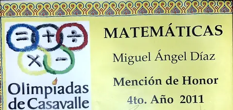
-
-
2012
-
Medalla de bronce en la Olimpíada de Matemáticas de Casavalle
5to año de escuela. Organizada por el Centro Educativo Los Pinos.
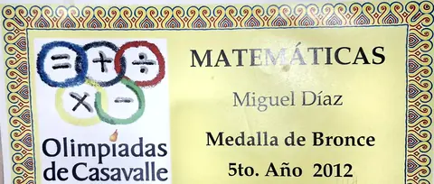
-
Seleccionado Nacional de Matemática
Final de la XXVII Olimpíada Nacional de Matemática, nivel I. Integrante del Seleccionado para 2013.
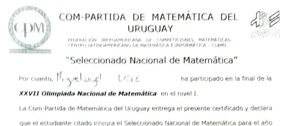
-
-
2013
-
Primer premio en el Torneo Canguro Matemático
XX Torneo, organizado por la Com-Partida de Matemática del Uruguay.
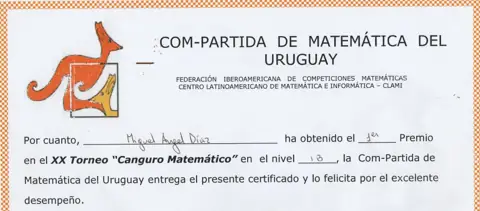
-
Mathematical Olympiads for Elementary & Middle Schools
Participación en la edición 2012 - 2013 por el Centro Educativo Los Pinos.
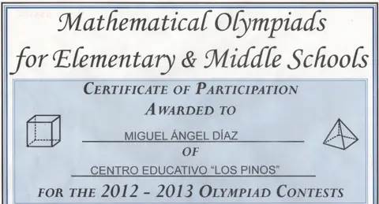
-
Medalla de plata en la Olimpíada de Matemáticas de Casavalle
6to año de escuela. Entrega de premios en el Centro Educativo Los Pinos, con el vicepresidente Danilo Astori. En la foto soy el segundo desde la izquierda en la fila de adelante. Foto y nota en Subrayado
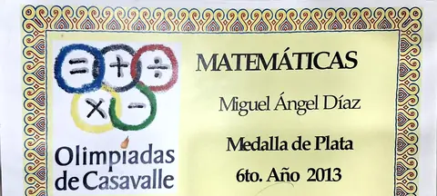
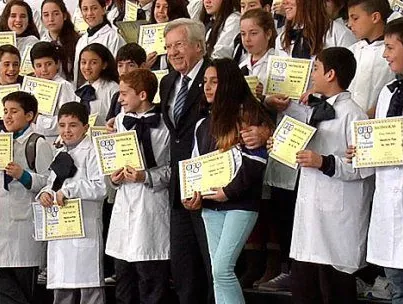
-
Quinto premio en la Olimpíada Nacional de Matemática
Final de la XXVIII Olimpíada. Integrante del Seleccionado para 2014.
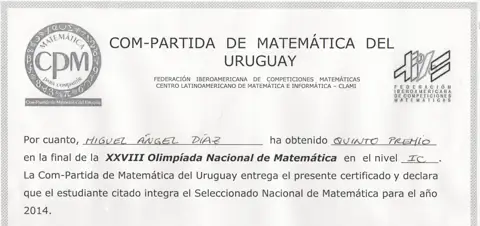
-
-
2016
-
Medalla de bronce en la Olimpíada de Matemáticas de Casavalle
3er año de liceo.
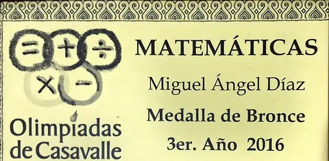
-
Feria Tecnológica de Pensamiento Computacional
Participación en la edición de 2016.
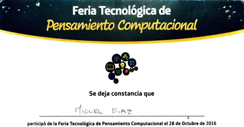
-
-
2017
-
Mención de honor en la Olimpíada de Matemáticas de Casavalle
4to año de liceo.
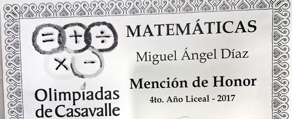
-
-
2019
-
Segundo puesto en los Juegos Deportivos Nacionales
Tercera categoría.
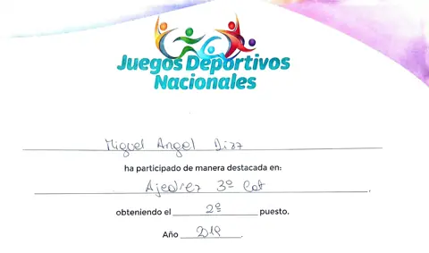
-
Egreso de Bachillerato
Opción Científico Matemático, Consejo de Educación Secundaria.
-
Reconocimiento Inspira
Distinción del Consejo de Educación Secundaria a proyectos que, partiendo del aula, tuvieron repercusión nacional o internacional. Integrante del equipo del Liceo 15 que elaboró café de butiá. La ceremonia en la diaria
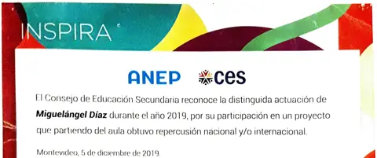
-
-
2020
-
Inicio de Ingeniería en Computación
FING - UDELAR
-
-
2023
-
Título de Analista en Computación
Título intermedio de Ingeniería en Computación. FING - UDELAR
-
-
2024
-
Inscripción a la Licenciatura en Matemática
FCIEN - UDELAR
-
Proyecto de grado con calificación máxima
Inteligencia computacional para la generación de modelos subrogados, con 12/12 en Ingeniería en Computación.
-
-
2025
-
Título de Ingeniero en Computación
FING - UDELAR
-
Inicio de las licenciaturas en Estadística y en Economía
FCEA - UDELAR
-
-
2026
-
Inicio de la Maestría en Informática
PEDECIBA | Tesis
-